00 · Executive reading核心判断：贡献重心在“组合、迁移与昇腾落地”
openPangu 2.0 并未把主要贡献包装成一种全新的 Transformer 主干。它把 MLA、DSA、SWA、MoE、mHC、MTP、Muon 等已有路线组合为面向 512K 上下文与 Agent 工作负载的模型，再围绕 Ascend NPU 重做长序列训练、MoE 通信、算子融合、量化、缓存和异步调度。模型创新与系统工程必须放在一起解读。
全局检索 + 局部窗口
主体按 DSA–SWA–SWA 重复；PAS 提供可学习 attention sink，ModAttn 用短程因果卷积补充局部归纳偏置。
34T 级课程 + 后置稀疏化
从 4K 逐步扩到 512K，先训练 FULL–SWA，再用 108B replay 将 FULL 层转换成 DSA。
四类 RL 专家 + OPD
Reasoning、General、Agent、Coding 专家并行优化，最终通过多教师 on-policy distillation 融合到统一模型。
Ascend 全栈共设计
Felix CP、W8A8、融合算子、多流、Omni Cache、vLLM V1 异步调度与 MTP full graph 共同支撑部署。
证据等级
01 · Model positioning两款主模型、端侧分支、checkpoint 口径与许可证
Relative positioning · 本文概括
openPangu-2.0-Flash
92B / 6B active46 层主干、2 层 Dense + 44 层 MoE；256 个 routed experts，Top-8；面向低延迟和较小部署规模。
Relative positioning · 本文概括
openPangu-2.0-Pro
505B / 18B active50 层主干、3 层 Dense + 47 层 MoE；384 个 routed experts，Top-8；面向更强推理与 Agent 能力。
| 结构参数 | Flash | Pro |
|---|---|---|
| 论文口径总参数 / 激活参数 | 92B / 6B | 505B / 18B |
| Hugging Face 完整 checkpoint 自动统计 | 100B | 541B |
| 主干层 / Dense / MoE | 46 / 2 / 44 | 50 / 3 / 47 |
| hidden size / attention heads | 2,560 / 48 | 5,120 / 64 |
| MLA Q rank / KV rank | 1,024 / 512 | 1,536 / 512 |
| QK NoPE / RoPE dim；V head dim | 128 / 64；128 | 128 / 64；128 |
| Dense FFN intermediate | 9,216 | 16,128 |
| routed / shared experts | 256 / 1 | 384 / 1 |
| 每 token routed Top-k | 8 | 8 |
| 单 expert intermediate | 1,024 | 1,792 |
| DSA indexer heads / head dim / Top-k | 24 / 128 / 2,048 | 32 / 128 / 2,048 |
| DSA:SWA / SWA window | 1:2 / 512 | 1:2 / 512 |
| PAS / mHC streams / Sinkhorn | 128 / 4 / 20 | 128 / 4 / 20 |
| 最终 MTP layers | 3 | 3 |
| 原生上下文 / 最终 RoPE theta | 512K / 6.4M | 512K / 6.4M |
| 架构词表大小 | 151,552 | 151,552 |
Pro model card Pro config Flash model card Flash config
1.3 报告还列出一款 30B / 2B active 端侧模型
这款 MoE 分支面向资源受限设备，并围绕 Kirin 硬件做量化、剪枝、专家复用与预取。它不是 Pro/Flash 的简单缩小版：系统瓶颈从数据中心的跨卡通信，转成设备内存容量、expert 频繁换入换出和加载停顿。
30B / 2B active
报告只披露总参数与激活参数，没有层数、专家数或上下文配置。
量化 + 剪枝
作者报告推理速度提高 50%、内存占用降低 20%。
相邻 token 复用专家
专门的 reuse loss 使 expert switching frequency 降低 50%。
预测并预取专家
提前加载后续 token 可能选择的专家，作者报告吞吐最高提高 5×。
02 · Architecture overview主干数据流：四路残差流包住混合注意力与 MoE
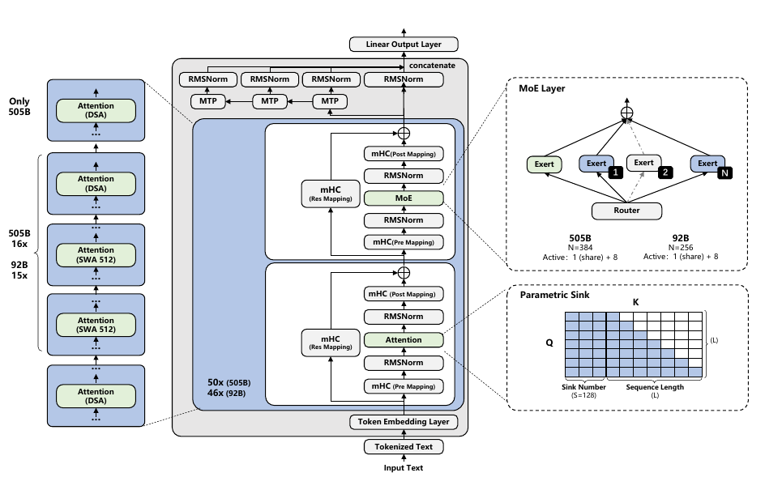
Embedding
residual state
PAS + ModAttn
Top-8 experts
+ MTP-3
稀疏全局检索 SWA 512
局部连续建模 SWA 512
局部连续建模 mHC · 4 streams Shared + routed MoE Ascend system co-design
架构的四层含义
全局与局部职责分离
约三分之一层承担 DSA 全局检索，其余层只维护 512-token 窗口，降低 indexer、cache scan 与长序列通信的平均成本。
信息在四条流之间动态混合
mHC 不只是增宽 hidden size；它在残差状态层面保留四路表示，再通过受约束矩阵读取、写回和混合。
绝大多数层采用 MoE
每个 token 只激活 8 个 routed experts 与 1 个 shared expert，以激活参数显著小于总参数的方式扩展容量。
MTP 既是训练目标也是推理草稿器
训练后期使用 3 个 MTP 层，一次额外预测三个位置；推理系统进一步为 MTP-3 做 full-graph 和异步调度。
03 · Hybrid attentionMLA + DSA–SWA：让少数层找远处，多数层看近处
openPangu 的注意力底座明确建立在 Multi-head Latent Attention（MLA） 上：Q 与 KV 先压缩到低秩 latent，再上投影为多头注意力需要的表示。这里不能把 num_attention_heads 误读成普通 GQA 的 Q-head/KV-head 数量；KV 的压缩由 latent rank 表达。
3.1 SWA：512-token 的局部工作马
Sliding-Window Attention 对真实历史 token 只读取最近 512 个，同时仍可访问固定的 128 对 PAS，负责局部语法、短程实体关系与连续状态更新。对单个 decode query，真实 token 的 cache read 和 attention compute 不随历史长度增长；但处理整段长度为 S 的 prefill 仍需 O(S·512)=O(S) 的总工作量。
3.2 DSA：Lightning Indexer 先选 2,048 个历史 token
DSA 先用轻量 indexer 为历史 token 打分，再从因果可见历史中选 Top-k，随后只对这些 token 做稀疏注意力。论文正文使用“例如 K=2,048”的措辞，而官方 Pro/Flash 配置均确认 index_topk=2048；因此该值可作为发布 checkpoint 的实际配置，而不是仅凭论文例子推断。
3.3 为什么不是每层都用 DSA
| 长上下文主导项 | 纯 DSA | FULL–SWA | DSA–SWA |
|---|---|---|---|
| Prefill 二次项系数 | 每层都跑 indexer | 约 1/3 层 full attention | 约 1/3 层跑 indexer |
| Decode cache read 线性项 | 每层读 indexer cache | 约 1/3 层读 full KV | 约 1/3 层读 indexer cache |
| Cache memory 线性项 | KV + indexer | 约 1/3 full KV | 约 1/3 (KV + indexer) |
| 局部层成本 | 仍需全局选择 | SWA 固定窗口 | SWA 固定窗口 |
关键不是“稀疏注意力天然便宜”，而是 DSA 的 indexer 自身仍随历史长度工作。把 DSA 只放到周期性全局层，可以把全局检索成本摊薄到约三分之一层。
3.4 后置稀疏化：先学好 FULL，再迁移到 DSA
主预训练
dense warm-up
LR 1e-3
sparse adaptation
LR 8e-6
发布模型
只有原 FULL 层被替换成 DSA，SWA 层保持不变；Lightning Indexer 通过权重 0.1 的辅助目标拟合原 full-attention score。作者称 100B adaptation 后“mostly recovers”下游性能，但未提供 92B/505B 主模型的完整恢复曲线，因此不应写成无损迁移已经被充分证明。
04 · Local inductive biasPAS 与 ModAttn：为混合注意力补上“无处可看”和短程顺序
4.1 PAS：把 attention sink 显式参数化
每层增加 128 对可训练 latent K/V。它们不代表真实 token，而是为注意力提供稳定的“空操作”出口：当某个 query 没有值得关注的内容时，模型可以把 attention mass 分配给 PAS，而不是迫使序列开头或窗口内某个真实 token 充当 sink。
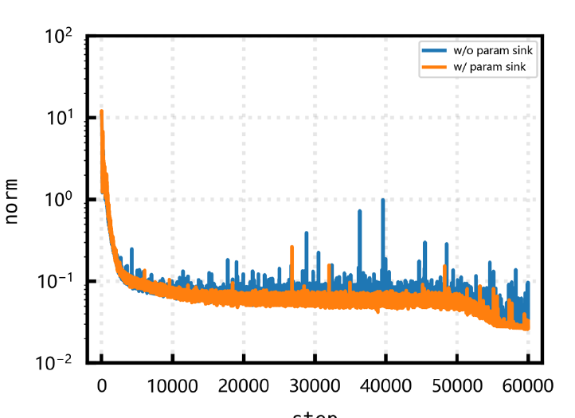
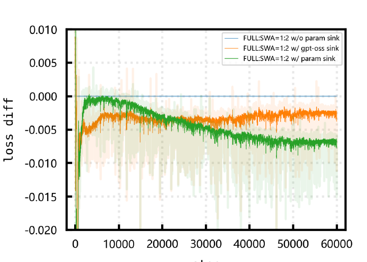
4.2 ModAttn：在压缩分支和注意力输出上做深度因果卷积
该模块分别用于 MLA 的 compressed-Q 分支、compressed-KV 分支，以及 FlashAttention 聚合后、output projection 前。卷积为 depthwise causal Conv1D，groups=H、kernel=3，只引入极短程状态，却能为 DSA 的远程稀疏检索和 SWA 的固定窗口补充稳定的相邻 token 归纳偏置。
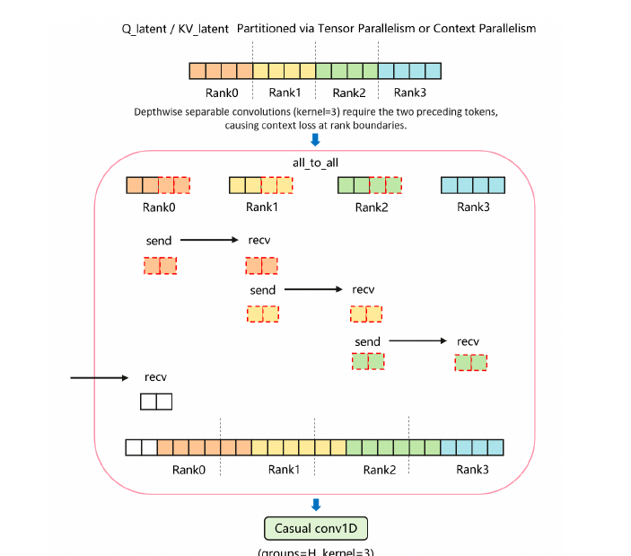
05 · Conditional capacity & topologyMoE 与 mHC：扩容量，同时约束四路残差传播
5.1 Shared + routed experts
除 Flash 开头 2 个、Pro 开头 3 个 Dense FFN 层外，主干其余层均为 MoE。每个 token 始终经过一个 shared expert，同时从 256/384 个 routed experts 中激活 8 个。该结构与 DeepSeekMoE 路线高度相近，但报告在 MoE 结构处没有足够明确的“继承 DeepSeekMoE”声明，因此技术谱系中应标为结构相近，而非确定直接来源。
5.2 自适应 auxiliary-loss-free bias
Q_i=1/N_r 是目标负载，F_i 是 global batch 中实际专家负载。相较原 sign update，RMS 归一化保留了过载幅度的相对大小。bias update LR 为 1e-3；另有权重 2e-4 的 EP-group auxiliary loss 和 1e-6 的 router z-loss。这些稳定项只在 General 阶段启用。
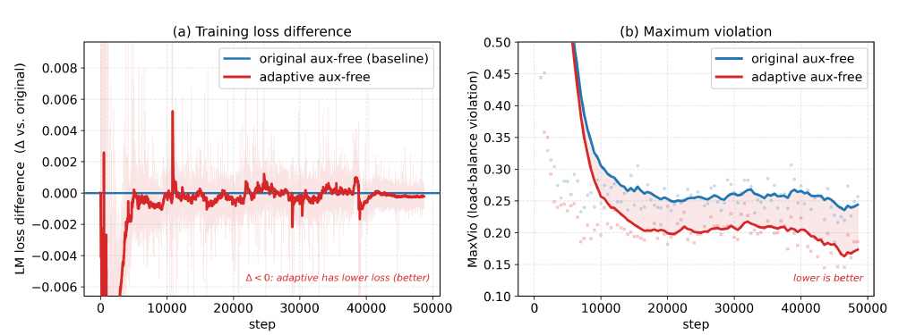
5.3 mHC：四条残差流的读取、写回与受约束混合
H_pre 决定子层从哪几条流读；H_post 决定输出写回哪几条流；H_res 在残差路径上做跨流混合，并经 20 轮 Sinkhorn-Knopp 投影到近似双随机矩阵集合。它的目的不是让 residual 任意放大，而是提升表示多样性的同时控制深层传播。
5.4 openPangu 对原 mHC 的稳定性修正
- 在子层输出写回
H_post之前加入 sandwich normalization； - 第一层之后以及每隔五层，对多流主干做 block-level post-normalization；
- 针对浅层
H_pre/H_post同时趋近 0 的 gate collapse 做专门修复。
| MoE15B-A2B，1T tokens | MMLU | CEval | BigBench | MATH | MBPP+ | 平均 |
|---|---|---|---|---|---|---|
| baseline | .765 | .708 | .591 | .459 | .532 | .594 |
| mHC | .799 | .743 | .622 | .472 | .553 | .615 |
平均提高 0.021，但这是 15B 代理模型的消融；不能据此精确拆分 mHC 对 92B/505B 最终成绩的贡献。
06 · Prediction & optimizationMTP 与 Muon：训练目标、投机草稿器和矩阵正交化
6.1 三层 MTP 的阶段调度
| 阶段 | 上下文 | MTP 层数 | loss 权重 |
|---|---|---|---|
| General | 4K | 1 | 0.3 |
| Reasoning | 8K | 1 | 0.1 |
| Annealing | 32K / 128K / 512K | 3 | 每层 0.1，合计 0.3 |
所有 MTP 内部注意力均为 window=2,048 的 SWA。训练后期逐步增加 MTP 深度，使最终 checkpoint 可作为三层 self-speculative drafter；但论文未披露主模型的接受率、每轮平均接受 token 数或 MTP 单独带来的吞吐收益。
6.2 Muon + AdamW 混合优化
二维及更高维矩阵
momentum 0.95、Nesterov；Newton–Schulz 固定 5 轮；update 乘 gamma=0.2。MLA Q/KV up-projection 按 attention head 分成四组再正交化。
向量与敏感参数
embedding、prediction head、PAS、RMSNorm、mHC gate coefficient 等使用 AdamW；beta=(0.9,0.95)，epsilon=1e-8。
论文称 Muon 只维护一阶 momentum，因此 optimizer state memory 相比 AdamW 减半。全局 weight decay 为 0.1，但 embedding 与 RMSNorm 不衰减。
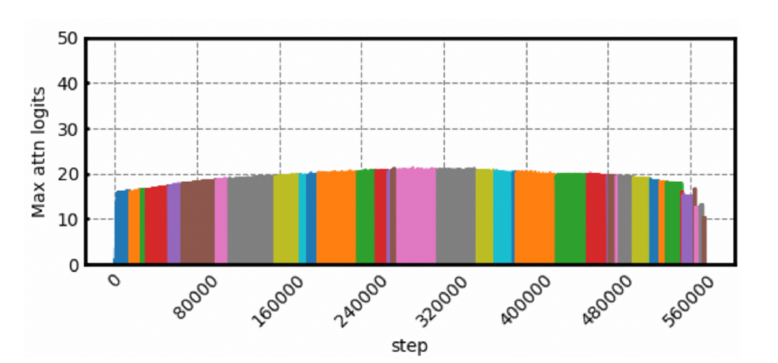
07 · Pre-training34T 级数据课程：4K → 8K → 32K → 128K → 512K
25T @ 4K
8T @ 8K
0.8T @ 32K
0.2T @ 512K
7.1 数据构成
公开类别包括网页、图书、PDF、多语言文本、代码仓库、STEM、行业数据、agentic tasks 和 synthetic data。数据工程同时使用规则过滤与模型评估，为文档打 quality、difficulty、topic、educational value 标签，并对含长尾知识但格式较差的文本做语义保留式重写。
论文没有给出各类别或语言比例、去重率、污染检查、合成数据占比、具体数据集名单和版权分布。因而“34T”主要是 token 处理规模，不等于可审计的唯一语料量。
7.2 学习率、batch 与长度课程
| 阶段 | 长度与 token | Flash | Pro | RoPE base |
|---|---|---|---|---|
| General | 25T @ 4K | batch→36M；peak LR 3e-4 | batch→64M；peak LR 2e-4 | 10K |
| Reasoning | 8T @ 8K | LR 1e-4 → 3e-5；增加 STEM 与代码 | 100K | |
| Annealing-1 | 800B @ 32K | LR 从 3e-5 开始继续 cosine | 400K | |
| Annealing-2 | 400B @ 128K | 长文档和复杂 Agent trajectory | 1.6M | |
| Annealing-3 | 200B @ 512K | 最终 LR 8e-6 | 6.4M | |
7.3 Tokenizer：牺牲少量压缩率，换取规则的数字表示
Tokenizer 由中文、英文、代码、行业文档和 188 种低资源语言的重平衡混合重新训练。报告比较两种数字预切分：3-digit 以三位数字为组，压缩率更好；single-digit 把连续阿拉伯数字逐位切分，数字模式更规则。最终采用 single-digit，以服务数值推理、多模态坐标和工具参数，代价是平均字符/token 从 3-digit 的 2.71 降到 2.59。
| Tokenizer | Vocab | 中文 | 英文 | 多语言 | 代码 | 行业 | 平均字符/token |
|---|---|---|---|---|---|---|---|
| openPangu-1.0 | 153,376 | 3.82 | 4.30 | 2.80 | 2.80 | 4.18 | 2.56 |
| 2.0 · 3-digit | 150,400 | 4.04 | 4.27 | 3.37 | 2.77 | 4.51 | 2.71 |
| 2.0 · single-digit（最终） | 149,600 | 3.82 | 4.15 | 3.32 | 2.56 | 4.27 | 2.59 |
Table 4 的 tokenizer vocab 是 149,600，而模型架构表与公开 config 是 151,552；两者差 1,952，报告没有解释是否来自特殊 token、padding 或发布配置扩展。
7.4 训练算力没有披露
报告确认基于 Ascend NPU 训练，并按 CloudMatrix 384 supernode 拓扑做 TP/CP/EP 亲和分组；但没有给出实际 NPU 总数、使用多少个超节点、训练天数、NPU-hours、总 FLOPs、MFU、吞吐、成本或能耗。“CloudMatrix 384”是产品/拓扑名称，不能被解释为“使用了 384 张卡训练”。
08 · Training systems长上下文、Muon、MTP 与 ModAttn 的系统协同
8.1 512K Context Parallelism
FULL 阶段使用 Ulysses + KV CP 的 Hybrid CP；DSA 阶段默认 KV CP。对 SWA，系统把全局 AllGather 改成相邻 rank P2P，通信量由与序列长度相关的 S·B·H 降到窗口相关的 W·B·H。对 FULL/DSA，只交换同一 packed sub-sequence 的因果历史 KV，并以 AllToAllV 替代 AllGather。
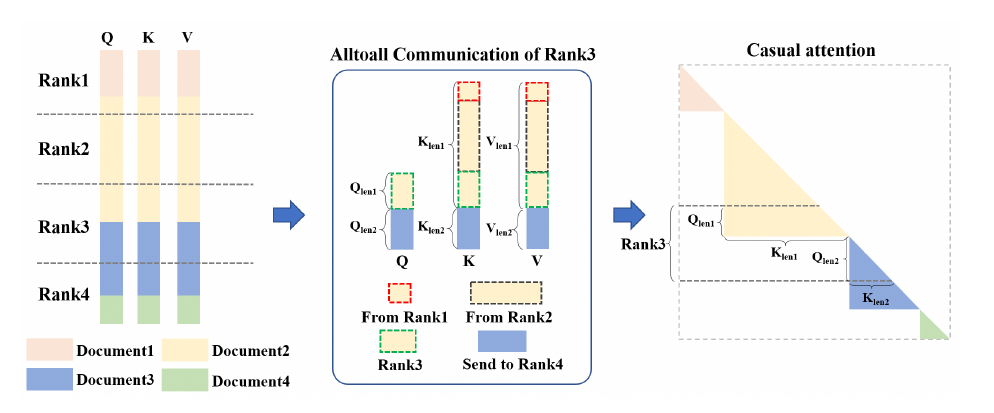
8.2 FA Rescale：在没有原生 PAS kernel 时精确合并两次 attention
两次 FlashAttention 分别处理真实序列和 PAS，利用 softmax max/sum 统计在 FP32 中合并。数学上等价于一次全局 softmax，差异只来自最终 BF16 rounding；DSA 的 KL 辅助目标还能只观察不含 sink 的主序列统计。
8.3 HyperParallel Muon+
在 DDP bucket ZeRO 下，系统根据 bucket/参数边界选择 AllGather 或 AllToAllV，并把 DP 拆成 DPouter × DPinner：outer 做跨 hyperplane 对称 AllGather，inner 控制 AllToAllV 范围。bucket i 的通信与 bucket i-1 的 Newton–Schulz 正交化和参数更新重叠。
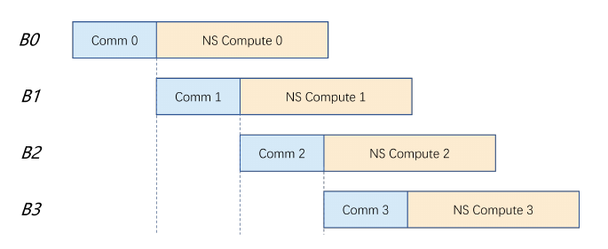
8.4 mHC 与 MTP 的流水线优化
- 无 PP 时做 intra-layer recomputation；PP+VPP 时跨层递归恢复，仅保留必要 activation。
- PP 边界只传 mHC-expanded backbone hidden state，而不额外发送三个 MTP auxiliary payload；MTP state 到目标 stage 后本地展开。
- 最终 3 层 MTP 由 4 条跨 stage stream 降到 1 条，相关 P2P 下降 75%。
- MTP layers 分散到 PP/VPP stages；projection/loss 按 sequence chunk 即时 forward-backward。
- 相较 unbalanced MTP layout，作者报告训练吞吐提高约 20%。
8.5 ModAttn kernel
跨 rank 只交换卷积边界；反向时从 attention output 重建 padding，避免缓存 padded tensor；因果卷积从 Cube 改到 Vector 核，以 rolling state 把三个局部状态保存在寄存器中。作者报告该模块计算时间降低 79%，这是模块级 latency，不是端到端训练提速。
09 · Post-training512K SFT、四类 RL 专家与多教师 OPD
9.1 统一 SFT
SFT 上下文直接设为 512K，同时混合 thinking 与 non-thinking 数据。四类数据覆盖 Reasoning、General Chat、Coding 和 Long-Trajectory Agent；Agent 轨迹来自真实 HarmonyOS 与模拟 sandbox，错误步骤由环境反馈与 reward model 定位并在训练时 mask。
9.2 四个并行 GRPO 专家
数学、科学与工具
LLM quality filter、标签平衡，并对 Jupyter/Python parse error 施加惩罚。
通用对话
指令遵循、事实、长上下文、多轮交互；规则 reward 与 generative reward model 结合。
长轨迹环境
TITO、动态移除持续解出的样本、工具语法惩罚、环境外确定性验证，从 General RL checkpoint warm start。
真实执行反馈
gateway 捕获 prompt/completion/logprob，重建完整 trajectory；monitor agent 在线监控 reward hacking。
四类专家均采用 GRPO，且不使用 KL regularization。报告没有披露各专家的 episode/token 数、batch、训练步数、奖励权重、NPU 规模与时长。
9.3 Multi-expert On-Policy Distillation
on-policy rollout
RL expert
计算 log-prob gap
更新统一 policy
优势不再来自独立 reward，而来自领域 expert 与当前 policy 对实际生成 token 的概率差。近零优势 token 被 mask，极端 ratio 被 clip；多个教师不同时常驻，而是在共享 NPU pool 上顺序加载、分组打分。当前 expert probability 来自 training-engine forward，不是 inference backend。
10 · Train–infer consistency当前缓解方案与“Full Alignment”预览必须分开
10.1 当前 openPangu 2.0 使用的缓解
- 训练从 BF16 改为 FP16，并使用 dynamic loss scaling；
- KPop 替代大部分 IcePop / 普通 rejection sampling；
- 根据 train–rollout PCC 使用更严格或更宽松的 token mask；
- R3 记录 rollout 时实际使用的 MoE routing，在训练端重放；
- Masked R3 只对训练/推理专家重合足够高的 token replay；Cached R3 为多轮 Agent 保存首次生成时的 route record。
10.2 三类 mismatch
模型定义不同
训练与推理侧算子、精度或状态定义不一致。
计算图重排
融合、并行分块和归约顺序改变数值路径。
硬件 tiling 非确定性
SplitK、聚合顺序、batch/shape 变化带来数值漂移。
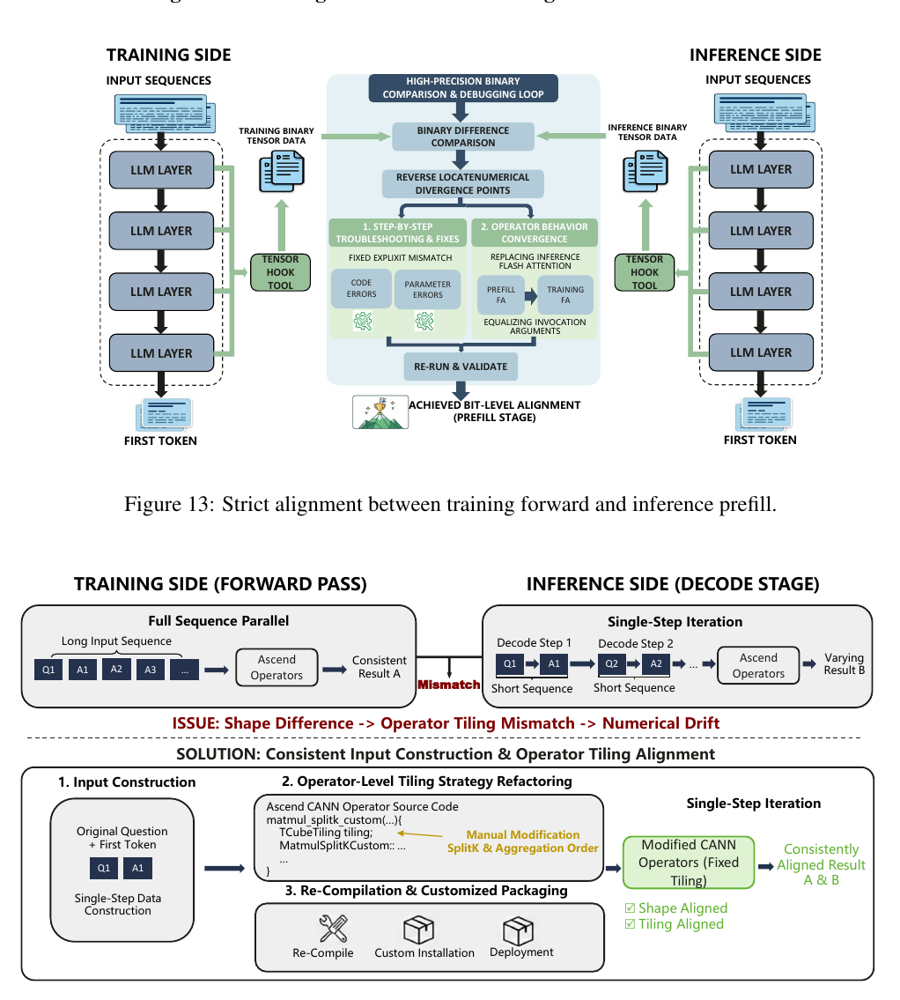
11 · Ascend inference并行、量化、融合、多级缓存与异步调度
11.1 官方部署栈与两种拓扑
一手资料确认的路径是 Ascend 910C/A3 上的 omni-infer，结合 AscendC、CANN、HCCL、ACL Graph、npugraph_ex、omni-npu、omni-ops，并扩展 vLLM V1 的异步调度与混合 KV cache。
| 部署形态 | Prefill | Decode | 公开参考拓扑 |
|---|---|---|---|
| Ultra-low latency | PD-mix；SWA 用 TP、MoE 用 EP、DSA 用 CP | SWA 保持 TP、MoE 保持 EP；DSA 用 redundant weights 切到 TP | A3 单节点 latency 测试 |
| Low latency / high throughput | PD-disaggregated；prefill topology 与 ultra-low 的 prefill 完全相同 | Attention DP + MoE EP | Flash 1P1D / 2 nodes；Pro 2P1D / 8 nodes |
Pro 官方 2P1D inventory 横跨 8 台主机、每台暴露 NPU 0–15，即 128 个可见 device；这是从参考拓扑推得的可见设备数，不是理论最低硬件门槛。HF 模型仓库也未提供普通 Transformers 单机 quickstart，目前没有一手证据支持通用 GPU/vLLM/SGLang 即插即用。
11.2 W8A8：不是全模型 INT8
权重采用 static symmetric per-output-channel INT8，激活采用 dynamic per-token INT8。对 SmoothQuant 的输入/输出平滑指数分别做二维搜索，并对 up projection 的输入/输出 smoothing 交替优化。
| 量化为 INT8/INT8 | 保留 BF16/BF16 | 原因 |
|---|---|---|
| MLA o_proj、q_b_proj | kv_b、q_a、kv_a | 小矩阵收益有限或对残差/双向使用敏感 |
| Dense MLP gate/up/down | Lightning Indexer 全部投影 | TopK 前的微小误差可能改变离散选择 |
| Routed expert gate/up/down | shared expert、router gate | 共享路径和路由对误差更敏感 |
| — | embedding、LM head、mHC | 输出质量与残差累计 |
论文分析口径中 Pro 权重约从 1009GB 降到 517GB，1.95×；HF 完整 INT8 仓库约 551GB。两者分别是模型权重分析与发布包体积，不能混作同一口径。
Pro INT8 checkpoint w8a8_dynamic config HF storage metadata BF16 deployment README INT8 deployment README
11.3 融合算子、MoE 通信与 Graph
关键路径拆分
融合上一层 merge、RMSNorm 与 Hpre；Hpost/Hres 放低优先级侧流，Sinkhorn 可独立重叠。
L1 micro-tile
无效 tile 在搬入 L0 前跳过，PAS 常驻 L1；作者报告 SWA operator 提升 30%–40%。
Non-BSP + token-centric
AtomicAdd 顺序化减少 barrier；每 token 只读取和量化一次，再发送给 Top-k experts。
静态编译 + Superkernel
static compilation 改善 TPOT 1.2ms，Superkernel 再改善 2ms，合计约 3.2ms。
不同数字的分母并不相同：有 operator latency、dispatch latency、module time、TPOT 和端到端 latency，不能把 79%、40%、30%、20%、5% 直接相加。
11.4 Felix CP：不同注意力层使用不同并行
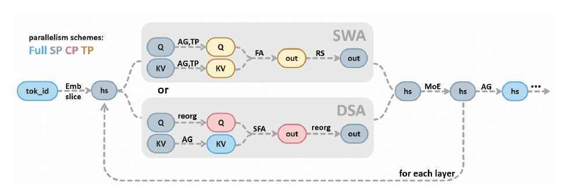
DSA 只交换本 rank query 需要的 KV cache；SWA 在低维 ModAttn 后再 AllGather，并把 attention output 用 All2All 转回 SP。论文声称这是首个支持 APC 的开源 Mamba-like SP 实现，该“first”应保留作者限定。
11.5 Omni Cache：DRAM 保存历史，HBM 只放当前 buffer
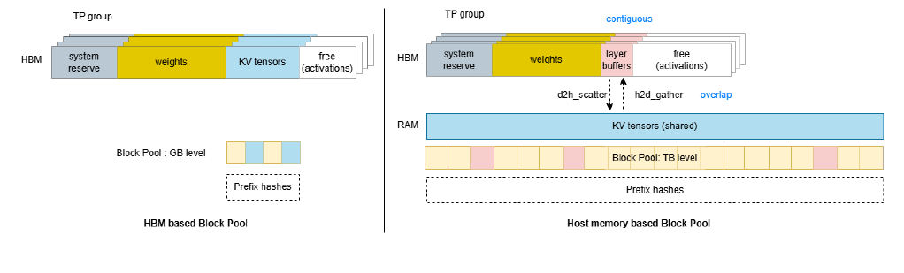
D2H scatter 与 H2D gather 和每层计算重叠。作者报告 native KV space 超过 10×、APC hit rate 3×、prefill max-batch-tokens 4×，并可在单个 A3 node 上继续支持 512K；但没有给绝对命中率、DRAM 带宽需求或传输无法完全隐藏时的退化曲线。
11.6 Hybrid page、异步调度与 Multi-MTP full graph
- DSA、SWA/MLA、ModAttn/Mamba-like cache 使用异构页面，并用统一 padded physical page +
torch.as_strided视图管理。 - 扩展 vLLM Single BlockPool、MambaSpec、prefix-cache negotiation 和 hybrid KV manager。
- sampling/draft token 走独立 async copy stream；CPU tiling 下放 AICPU；DP batch coordination 改为 AICPU 上的 HCCL ProcessGroup。
- 启用 MTP-3 后，即使某次执行仅包含 1–3 个 token，也强制进入 static full graph；draft/target 统一 shape，减少额外 DP 同步。
11.7 LoPT：基于原文字符位置的无损并行 tokenization
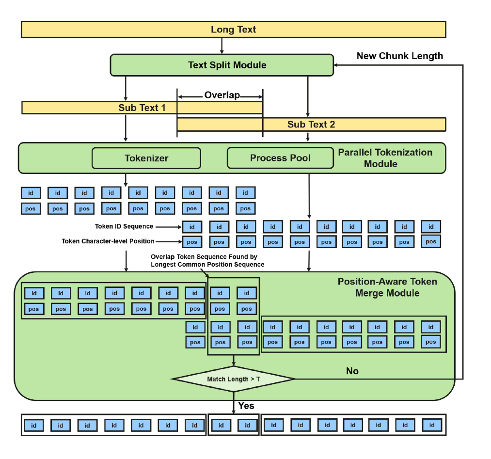
作者报告与串行 tokenizer 100% 一致，16-core CPU 提速 3–5×，overlap overhead 低于 5%。这里讨论的是 tokenization 到 1M 的系统能力，不代表模型原生上下文从 512K 升级为 1M。
12 · Evaluation速度、能力与证据边界分别看
12.1 理论长上下文收益不是端到端加速
| 相对 full-attention MLA | Hybrid DSA–SWA 理论系数 | 含义 |
|---|---|---|
| Prefill 二次 attention FLOPs | 约 1/15 | 只比较二次主导项，包含约三分之一层运行 Lightning Indexer 的二次成本；不代表端到端提速，也未计 core sparse attention、KV gather、projection、通信和 batching |
| KV cache growth | 约 40.7% | 8-bit hybrid 对 16-bit full 理想口径约 20.4% |
| Decode length-dependent cache scan | 约 7.4% | 8-bit 对 16-bit 理想口径约 3.7% |
12.2 Ascend 实测
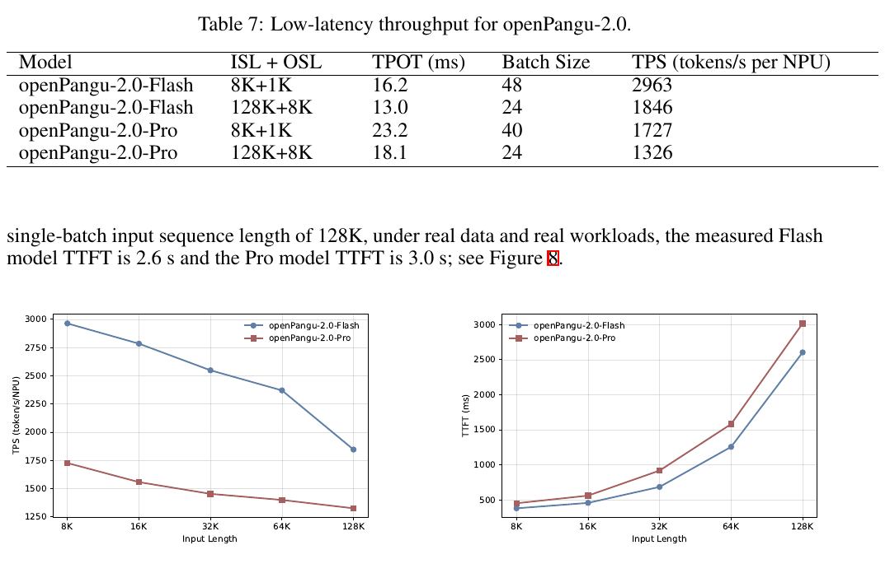
| 模式 | 模型 / ISL+OSL | TPOT | 并发或 batch 口径 | TPS/NPU |
|---|---|---|---|---|
| Ultra-low，A3 单节点 | Flash / 8K+1K | 5.27ms | global concurrency=1 | — |
| Ultra-low | Flash / 128K+1K | 5.63ms | global concurrency=1 | — |
| Ultra-low | Pro / 8K+1K | 9.53ms | global concurrency=1 | — |
| Ultra-low | Pro / 128K+1K | 9.55ms | global concurrency=1 | — |
| Throughput | Flash / 8K+1K | 16.2ms | per-NPU batch=48 | 2,963 |
| Throughput | Flash / 128K+8K | 13.0ms | per-NPU batch=24 | 1,846 |
| Throughput | Pro / 8K+1K | 23.2ms | per-NPU batch=40 | 1,727 |
| Throughput | Pro / 128K+8K | 18.1ms | per-NPU batch=24 | 1,326 |
128K single-batch prefill：Flash 单 A3 node TTFT 2.6s，Pro 两个 A3 nodes TTFT 3.0s。报告没有给同硬件外部 baseline、功耗、成本、MTP 接受率或完整 E2E server utilization；TPS/NPU 也不等于集群总吞吐。
12.3 能力评测怎么读：以下只是 Table 5 的部分代表性结果
| Benchmark | Flash non-thinking | Flash thinking | Pro non-thinking | Pro thinking |
|---|---|---|---|---|
| IFEval · PromptStrict | 89.3 | 95.9 | 90.4 | 94.5 |
| AIME 2026 · Avg@16 | 86.5 | 93.3 | 87.3 | 95.4 |
| GPQA-Diamond · Avg@4 | 79.8 | 83.7 | 81.1 | 87.9 |
| BrowseComp · Acc | — | 57.0 | — | 65.7 |
| LiveCodeBench V6 · Avg@3 | 50.9 | 85.1 | 74.5 | 85.7 |
| SWE-bench Verified · Avg@3 | 57.6 | 63.1 | 66.8 | 68.5 |
| GDPVal · Acc | — | 51.4 | 51.2 | 74.9 |
Table 5 统一使用 top-p=0.8、temperature=1.0，但只比较 openPangu 自身四种模式，没有外部模型列；粗体表示四个 openPangu 变体中最好，不代表行业最优。Claw-Eval 只测非多模态 splits；BrowseComp 使用 discard-all 且最多 300 iterations；SkillsBench、FeatBench、DeepCodeBench 使用 OpenCode，SWE-bench 使用 OpenHands；GDPVal 数据与 rubric 公开，但运行的是内部评测 pipeline。Deep Research 和全栈 mini-app 还依赖内部 pipeline 或 showcase，复现性弱于标准公开 benchmark。
13 · Technical provenance哪些可以画实线，哪些只能做横向比较
Longformer · SWA
1:2 interleaving
4 streams + sandwich / block postnorm
DeepSeek-V3 practice
及报告引用的后续 OPD 工作
| 技术点 | 前序工作 | openPangu 2.0 的变化 | 证据等级 |
|---|---|---|---|
| MLA | DeepSeek-V2 | 作为 DSA/SWA 的共同压缩注意力底座 | 报告明确建立在其上 |
| DSA | DeepSeek-V3.2 | 与 SWA 按 1:2 编排，后置稀疏化 | 明确采用 + 组合/迁移再设计 |
| PAS | Attention Sink 研究 | 每层 128 对持久化 latent KV | 现象来源明确；结构为本文方案 |
| ModAttn | 无明确直接祖先 | MLA 压缩分支与输出上的 kernel-3 因果卷积 | 报告提出 |
| MoE 主体 | 与 DeepSeekMoE 路线高度相近 | shared + routed experts、Top-8 | 结构相近；直接来源未确认 |
| MoE 路由平衡 | Auxiliary-Loss-Free Balancing；RMS 归一化更新 | RMS-normalized load-balance bias | 路线明确 |
| mHC | Hyper-Connections → mHC | sandwich norm + block postnorm | 明确继承 + 稳定化改造 |
| MTP | Better & Faster LLMs；DeepSeek-V3 | 1→3 层阶段调度与 MTP-3 系统优化 | 明确上游 + 本文配方 |
| Muon | Muon；Muon is Scalable 为相关规模化前作 | head grouping、HyperParallel Muon+ | Muon 明确采用；前作为相关观察 |
| OPD | On-Policy Distillation、MiniLLM 及报告引用的后续 OPD 实践 | 四领域专家、training-engine 概率、多教师调度 | 报告引用 + 工程化 |
| Felix CP | Ulysses / KV CP 背景 | DSA CP、SWA TP、ModAttn SP 的逐层编排 | 报告新系统方案 |
| Omni Cache | vLLM Hybrid KV / APC | DRAM-centric KV 与统一异构 page | 明确扩展 + 自身缓存体系 |
14 · Evidence boundaries报告没有回答什么
训练账单缺失
没有实际 NPU 数、超节点数、训练天数、NPU-hours、FLOPs、成本、能耗、吞吐或 MFU。
数据构成不可审计
没有来源比例、去重率、污染检查、许可证构成、合成数据占比和后训练 token/episode 数。
主模型拆解不足
PAS、mHC 的消融明确来自 15B 代理模型；routing-bias 曲线未注明模型规模；三者均缺少 92B/505B 的完整独立拆解。
512K 原生训练不等于无损
缺少从短上下文到 512K 的专门 accuracy 曲线，也没有完整展示 DSA 转换的恢复程度。
RL 规模与预算不透明
没有各专家训练量、GRPO 超参、thinking 输出预算、工具成本和 MTP 接受率。
没有外部同表对比
Table 5 只比较自身四种模式，内部 Deep Research 与 mini-app showcase 难以独立复现。
Ascend 特定口径
缺同硬件外部 baseline、功耗和成本；operator、dispatch、TPOT 与 E2E 改善不能直接相加。
部署与许可存在边界
官方验证路径是 omni-infer + Ascend；权重许可证有地域和再分发限制，并非通用 Apache-2.0。
15 · Primary sources一手资料与技术溯源链接
- openPangu-2.0: Towards Reliable and Efficient Agentic Reasoning
- openPangu-2.0-Pro model card · config
- openPangu-2.0-Flash model card · config
- openPangu-2.0-Pro-Int8 · w8a8_dynamic config · HF storage metadata
- openPangu-2.0-Infer / omni-infer deployment · BF16 README · INT8 README
- Pro 2P1D reference inventory
- openPangu-2.0-Op · omni-ops · OmniInfer
- OpenPangu Model License Agreement Version 2.0
- Attention Is All You Need
- DeepSeek-V2 / Multi-head Latent Attention
- DeepSeek-V3.2 / DeepSeek Sparse Attention
- Longformer / Sliding-Window Attention
- StreamingLLM / Attention Sinks · When Attention Sink Emerges
- DeepSeekMoE · Auxiliary-Loss-Free MoE Balancing
- Hyper-Connections · mHC
- CogView / Sandwich normalization
- Better & Faster LLMs via Multi-token Prediction · DeepSeek-V3
- Muon · Muon is Scalable for LLM Training
- DeepSpeed-Ulysses · ZeRO · DeepEP
- FlashAttention · FlashAttention-2
- DeepSeekMath / GRPO · On-Policy Distillation of Language Models · MiniLLM
- Rollout Routing Replay · IcePop
- SmoothQuant · vLLM
- LoPT
- Mooncake · LMCache（同类外部缓存系统对照；报告未提及或未确认采用）